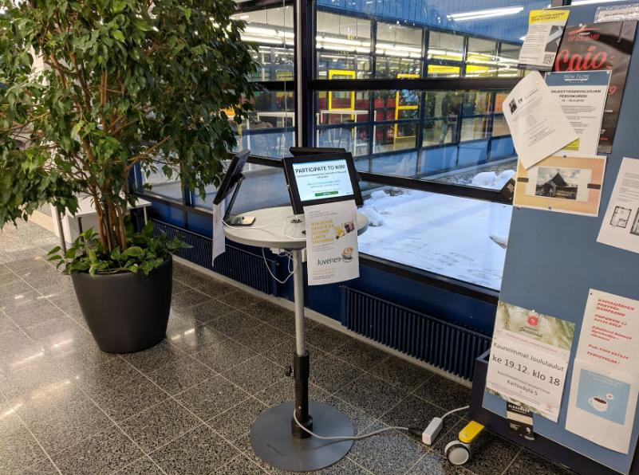

<!DOCTYPE html>
<html>
<head>
<meta charset="utf-8">
<meta name="viewport" content="width=device-width, initial-scale=1">
<title>Fueling AI with public displays? A feasibility study of collecting biometrically tagged consensual data on a university campus</title>
<link href="css/bootstrap.min.css" rel="stylesheet">
<style>
.author {
	margin-right: 1rem;
}
.inst {
	margin-right: 1rem;
}
.bibtex {
	text-align: left;
	font-size: 0.9rem;
}
.headline {
	text-align: center;
}
.paperlink {
  font-weight: 300;
  font-size: 1.5rem;
  font-family: "Google Sans";
}
.paperlink a {
  color: #000000;
}
.bold {
  font-weight: 700;
}
sup {
  margin-left:.2em;
}
ul {
  text-align: left;
}
</style>
</head>
<body>


<main>
  <h1 class="visually-hidden">Fueling AI with public displays? A feasibility study of collecting biometrically tagged consensual data on a university campus</h1>

  <div class="px-4 py-5 my-5 text-center">
    <h1 class="display-5 fw-bold">Fueling AI with public displays?</h1>
    <h2>A feasibility study of collecting biometrically tagged consensual data on a university campus</h2>
    <div class="col-lg-6 mx-auto">
      <p class="lead mb-4">
        <span class="author"><a href="https://simohosio.com/">Simo Hosio</a><sup>1</sup></span>
        <span class="author">Andy Alorwu<sup>1</sup></span>
        <span class="author"><a href="https://www.nielsvanberkel.com/">Niels van Berkel</a><sup>2</sup></span>
        <span class="author"><a href="https://cris.vtt.fi/en/persons/miguel-bordallo-lopez">Miguel Bordallo López</a><sup>1,3</sup></span>
        <br />
        <span class="author">Mahalakshmy Seetharaman<sup>1</sup></span>
        <span class="author"><a href="https://www.jonaso.de/">Jonas Oppenlaender</a><sup>1</sup></span>
        <span class="author"><a href="https://www.jorgegoncalves.com/">Jorge Goncalves</a><sup>4</sup></span>
      </p>
      <p class="lead mb-4">
      	<div class="inst"><sup>1</sup>University of Oulu</div>
      	<div class="inst"><sup>2</sup>Aalborg University</div>
        <div class="inst"><sup>3</sup>VTT Technical Research Centre of Finland</div>
        <div class="inst"><sup>4</sup>University of Melbourne</div>
      </p>
      <div class="d-grid gap-2 d-sm-flex justify-content-sm-center">
        <span class="paperlink px-4 gap-3">
          [<a href="https://nielsvanberkel.com/files/publications/perdis2019a.pdf">paper</a>] (pdf)
        </span>
        <span class="paperlink px-4">
          [<a href="#bibtex">bibtex</a>]
        </span>
      </div>
    </div>
  </div>

  <div class="b-example-divider"></div>


	<div class="container my-5">
	    <div class="row p-4 pb-0 pe-lg-0 pt-lg-5 align-items-center rounded-3 border shadow-lg">
	      <div class="p-3 p-lg-5 pt-lg-3">
	        <h1 class="headline display-4 fw-bold lh-1">Abstract</h1>
	        <p class="lead">
Interactive public displays have matured into highly capable two-way interfaces. They can be used for efficiently delivering information to people as well as for collecting insights from their users. While displays have been used for harvesting opinions and other content from users, surprisingly little work has looked into exploiting such screens for the consensual collection of tagged data that might be useful beyond one application. We present a field study where we collected biometrically tagged data using public kiosk-sized interactive screens. During 61 days of deployment time, we collected 199 selfie videos, cost-efficiently and with consent to leverage the videos in any non-profit research. 78 of the videos also had metadata attached to them. Overall, our studies indicate that people are willing to donate even highly sensitive data about themselves in public but that, at the same time, the participants had specific ethical and privacy concerns over the future of their data. Our study paves the way forward toward a future where volunteers can ethically help advance innovations in computer vision research across a variety of exciting application domains, such as health monitoring and care.
		    </p>
<h3 style="text-align:center">Key Contributions</h3>
      <p class="lead mb-4">
        <ul class="lead mb-4">
          <li>
            A dynamic, easy-to install setup to collect media files that are tagged with biometric metadata.
          </li>
          <li>
            A feasibility study that analyses the collected material and highlights important contextual aspects that must be considered in future deployments.
          </li>
          <li>
            Commentary and analysis of perceived ethical issues and potential new consent models that may be necessary in the future digital research ecosystems that exploit public displays as citizen-facing data collection interfaces.
          </li>
        </ul>

      </p>
	      </div>
	    </div>
	</div>


  <div class="b-example-divider"></div>

  <div class="px-4 pt-5 my-5 text-center">
    <h1 class="display-4 fw-bold">System Design</h1>
    <div class="col-lg-6 mx-auto">
      <p class="lead mb-4">

We used a made-to-order desk with adjustable height and a circular wooden tabletop that hosts three Android tablet mounts.
This setup makes it possible for 1–3 people to use the desk at the same time. Users cannot, however, easily see the screens of other users without consciously making an effort to peek by moving aside. We purchased a prepaid SIM card with unlimited data plan and used our own router, so that the deployment depended only on access to power and would not su￿er from WiFi outages or poor connection quality.

</p>

    <div class="container px-5">
      
    </div>

<h3>VideoSourcing Application</h3>
      <p class="lead mb-4">

We designed an Android application to facilitate the data collection: <span class="bold">VideoSourcing</span>.
VideoSourcing is designed to be run on tablet devices that would later on act as our public kiosk-sized displays.

      </p>
    </div>
    <div class="container px-5">
      
      
    </div>
  </div>

  <div class="pt-5 text-center">
    <h1 class="display-4 fw-bold">Results</h1>
    <div class="col-lg-6 mx-auto">
      <p class="lead mb-4">

Over the course of 61 days (4 days of pilot study + 57-day field study),
we collected a total of 199 selfie videos, corresponding to 3 videos per
day. Further, we received 78 metadata submissions to supplement the videos. 63 of
those left their email addresses, and of those 22 proceeded to provide
online questionnaire responses (a 35% conversion ratio)

      </p>

      <p class="lead mb-4">
In order to statistically assess the quality of the faces collected in the videos and their usability for face biometrics and computer vision
in general, we analysed them using a state-of-the-art face detector, based on the SSD-framework and ResNet as implemented in OpenCV.
<br />
The results of the automatic analysis show that:
<ul class="lead mb-4">
  <li>
179 videos (90% of the total) show a detected face during at least one full second, and are thus considered useful for several machine learning tasks as training data
  </li>
  <li>
113 videos contain a detected face during 100% of the duration of the video, 145 over 90% and 155 over 80%
  </li>
  <li>
20 videos do not contain a single detected face and could be discarded from a possible face database build from our results
  </li>
</ul>
      </p>

    </div>
  </div>

  <div class="b-example-divider"></div>

  <div id="bibtex" class="px-4 pt-5 my-5 text-center">
    <h1 class="display-4 fw-bold">Bibtex</h1>
    <div class="col-lg-6 mx-auto">
      <p class="lead mb-4 bibtex"><code>
@inproceedings{10.1145/3321335.3324943,<br />
  author = {Hosio, Simo and Alorwu, Andy and van Berkel, Niels and L\'{o}pez, Miguel Bordallo and Seetharaman, Mahalakshmy and Oppenlaender, Jonas and Goncalves, Jorge},<br />
  title = {Fueling AI with Public Displays? A Feasibility Study of Collecting Biometrically Tagged Consensual Data on a University Campus},<br />
  year = {2019},<br />
  isbn = {9781450367516},<br />
  publisher = {Association for Computing Machinery},<br />
  address = {New York, NY, USA},<br />
  url = {https://doi.org/10.1145/3321335.3324943},<br />
  doi = {10.1145/3321335.3324943},<br />
  booktitle = {Proceedings of the 8th ACM International Symposium on Pervasive Displays},<br />
  articleno = {14},<br />
  numpages = {7},<br />
  keywords = {ethics, computer vision, field study, public displays},<br />
  location = {Palermo, Italy},<br />
  series = {PerDis '19}<br />
}</code>
      </p>
    </div>
  </div>

  <div class="b-example-divider"></div>

<!--
  <div id="bibtex" class="px-4 pt-5 my-5 text-center border-bottom">
    <div class="col-lg-6 mx-auto">
      <p class="lead mb-4">Acknowledgements: This work was in part funded by the Academy of Finland (Grants 313224-STOP, 320089-SENSATE, 316253-SENSATE and 318927-6Genesis Flagship).</p>
    </div>
  </div>
-->

</main>

<script defer src="js/bootstrap.min.js"></script>
</body>
</html>